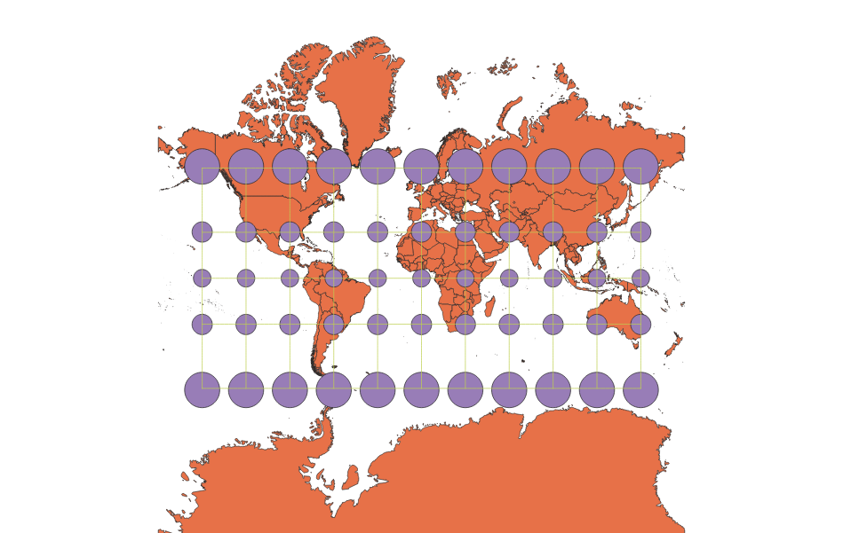

In this project I learned how to display images in different projections
Sam Rivers
To create the various projections displayed below, I began by adding a vector layer of the world. This was the Natural Earth Data shapefile. After adding that layer, I then used the indicatrix mapper with its default settings to add the graticules and caps representing area. Finally, to change in between projections, I went to CRS in project properties located at the bottom right of the QGIS window. Here you can select a variety of projections to choose from.
WGS84 Projection
The WGS84 projection preserves area and shape quite well between the middle latitudes and the equator. Near the poles, however, the shapes and areas are distorted. Latitude and longitude lines are straight on this projection.

Aitoff Projection
On the Aitoff projection, latitude and longitude lines are curved. Areas experience some magnification near the poles, but shape is mostly preserved overall.

Pseudo Mercator
The Pseudo Mercator preserves shape, but areas are magnified considerably near the poles. Latitude and longitude lines are straight.

Winkel Projection
The Winkel projection resembles the Aitoff projection, but features less curvature of the longitude lines and no curvature of the latitude lines. Shape is well preserved. Area is also well preserved, though there is some magnification near the poles.

Cylindrical Equal Area Projection
The Cylindrical Equal Area projection preserves area throughout, but there is significant North-South compression near the poles. Latitude and longitude lines are straight.

World Equidistant Conic Projection
The World Equidistant Conic projection preserves North-South distance. It is centered around the North Pole. Area is magnified as you move South. This results in considerable East-West elongation towards the South Pole.

North Pole Azimuthal Equidistant Projection
The North Pole Azimuthal Equidistant Projection is very similar to the World Equidistant Conic projection. Both feature straight longitude lines and curved latitude lines. Both preserve North-South distance, but result in area expansion towards the South Pole. The area expansion towards the South Pole results in siginificant East-West elongation.

Eckert 1 Projection
The Eckert 1 projection preserves shape well. There is a little area expansion towards the poles. Its most unique characteristic, however, is that its longitude lines, while straight, meet at an angle at the equator so as to bulge out away fromt the prime meridian.

Gall Stereographic Projection
The Gall Stereographic projection resembles the Pseudo Mercator in that shape is well preserved overall, but there is area magnification near the poles. The magnification near the poles is mostly East-West, making Greenland look considerably wider. The latitude and longitude lines are straight.

Now, you should add the following projections on your own:
EPSG: 3857, 53018, 54034, 54027, 102016, and two additional projections that you choose.
Data used for this project
Download Natrual Earth 1:10m Cultural Vector